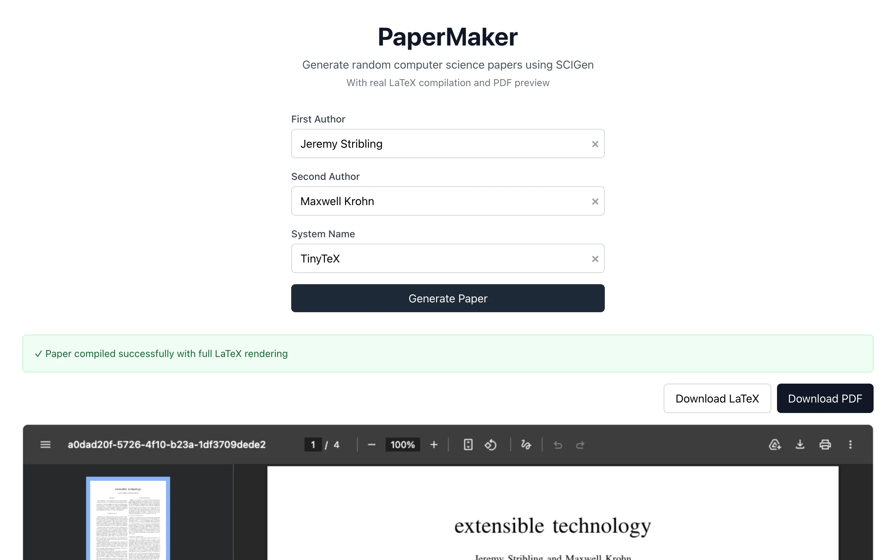

In 2005 three MIT grad students, Jeremy Stribling, Max Krohn, and Dan Aguayo, built SCIgen, which generates fake computer science papers from a context-free grammar. They submitted one to the World Multiconference on Systemics, Cybernetics and Informatics and it was accepted. It was called "Rooter: A Methodology for the Typical Unification of Access Points and Redundancy" and it meant nothing at all.
Papermaker is SCIgen in the browser. One click produces a typeset two-column PDF with a title, abstract, introduction, related work, a methodology, results with figures, a conclusion, and references. The papers have the right shape and the right density of jargon and say nothing. Skimmed the way a tired reviewer skims, they pass.
The grammar
SCIgen's grammar is a 3,777-line text file of production rules, each a symbol followed by one expansion, with alternatives listed as repeated rules and picked at random. It knows that a results section refers to figures, that figures have axes and legends, and that related work cites authors and venues. Two rule suffixes give it a little memory. A counter rule hands out the next integer each time it fires, and a companion rule draws a random integer below the current count, which is how a \ref ends up pointing at a figure that exists.
Perl to Rust to the browser
The original is Perl and writes LaTeX to disk. I rewrote the expansion engine in Rust and compiled it to WebAssembly with wasm-pack. It's 364 lines: a hash map of rules, a seeded SmallRng so a seed reproduces a paper, the counters, and a recursive expand. The grammar file and the graph grammar are fetched at runtime inside a Web Worker, and the worker fixes capitalization after sentence boundaries and in titles once the expansion is done.
Figures and the compile
The figures are my favorite part of the output. SCIgen's grammar emits gnuplot commands and graphviz for them, which was fine on a Unix box in 2005 and is useless in a browser, so a second worker rewrites them. It parses the gnuplot commands into pgfplots charts of throughput against input size with a few fictional series, seeded from the command text so the same paper gets the same chart, and turns the graphviz figures into TikZ flowcharts of boxes labeled with the paper's own component names. The bibliography gets the same treatment. BibTeX can't run, so the worker generates the entries and inlines a thebibliography environment. The data is random and the presentation is right, and a figure looked at on its own passes for an experimental result.
Then the LaTeX goes to latex.ytotech.com, a free compilation service with CORS enabled, and a PDF comes back. That service is the one piece of the project I don't run. If it goes away, Papermaker stops producing PDFs until I find another one or compile in the browser the way eigencircuits does. There are no tests and the build is a shell script.